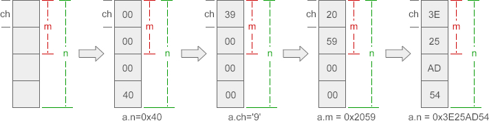
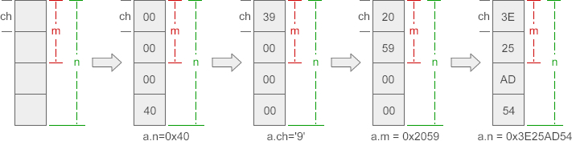

C语言共用体（C语言union用法）详解
通过前面的讲解，我们知道结构体（Struct）是一种构造类型或复杂类型，它可以包含多个类型不同的成员。在C语言中，还有另外一种和结构体非常类似的语法，叫做共用体（Union），它的定义格式为：
结构体占用的内存大于等于所有成员占用的内存的总和（成员之间可能会存在缝隙），共用体占用的内存等于最长的成员占用的内存。共用体使用了内存覆盖技术，同一时刻只能保存一个成员的值，如果对新的成员赋值，就会把原来成员的值覆盖掉。
共用体也是一种自定义类型，可以通过它来创建变量，例如：
要想理解上面的输出结果，弄清成员之间究竟是如何相互影响的，就得了解各个成员在内存中的分布。以上面的 data 为例，各个成员在内存中的分布如下：

成员 n、ch、m 在内存中“对齐”到一头，对 ch 赋值修改的是前一个字节，对 m 赋值修改的是前两个字节，对 n 赋值修改的是全部字节。也就是说，ch、m 会影响到 n 的一部分数据，而 n 会影响到 ch、m 的全部数据。
上图是在绝大多数 PC 机上的内存分布情况，如果是 51 单片机，情况就会有所不同：

为什么不同的机器会有不同的分布情况呢？这跟机器的存储模式有关，我们将在VIP教程《大端小端以及判别方式》一节中展开探讨。
f 和 m 分别表示女性和男性，s 表示学生，t 表示教师。可以看出，学生和教师所包含的数据是不同的。现在要求把这些信息放在同一个表格中，并设计程序输入人员信息然后输出。
如果把每个人的信息都看作一个结构体变量的话，那么教师和学生的前 4 个成员变量是一样的，第 5 个成员变量可能是 score 或者 course。当第 4 个成员变量的值是 s 的时候，第 5 个成员变量就是 score；当第 4 个成员变量的值是 t 的时候，第 5 个成员变量就是 course。
经过上面的分析，我们可以设计一个包含共用体的结构体，请看下面的代码：
union 共用体名{
成员列表
};
共用体有时也被称为联合或者联合体，这也是 Union 这个单词的本意。结构体和共用体的区别在于：结构体的各个成员会占用不同的内存，互相之间没有影响；而共用体的所有成员占用同一段内存，修改一个成员会影响其余所有成员。
结构体占用的内存大于等于所有成员占用的内存的总和（成员之间可能会存在缝隙），共用体占用的内存等于最长的成员占用的内存。共用体使用了内存覆盖技术，同一时刻只能保存一个成员的值，如果对新的成员赋值，就会把原来成员的值覆盖掉。
共用体也是一种自定义类型，可以通过它来创建变量，例如：
union data{
int n;
char ch;
double f;
};
union data a, b, c;
上面是先定义共用体，再创建变量，也可以在定义共用体的同时创建变量：
union data{
int n;
char ch;
double f;
} a, b, c;
如果不再定义新的变量，也可以将共用体的名字省略：
union{
int n;
char ch;
double f;
} a, b, c;
共用体 data 中，成员 f 占用的内存最多，为 8 个字节，所以 data 类型的变量（也就是 a、b、c）也占用 8 个字节的内存，请看下面的演示：
#include <stdio.h>
union data{
int n;
char ch;
short m;
};
int main(){
union data a;
printf("%d, %d\n", sizeof(a), sizeof(union data) );
a.n = 0x40;
printf("%X, %c, %hX\n", a.n, a.ch, a.m);
a.ch = '9';
printf("%X, %c, %hX\n", a.n, a.ch, a.m);
a.m = 0x2059;
printf("%X, %c, %hX\n", a.n, a.ch, a.m);
a.n = 0x3E25AD54;
printf("%X, %c, %hX\n", a.n, a.ch, a.m);
return 0;
}
运行结果：
4, 4 40, @, 40 39, 9, 39 2059, Y, 2059 3E25AD54, T, AD54这段代码不但验证了共用体的长度，还说明共用体成员之间会相互影响，修改一个成员的值会影响其他成员。
要想理解上面的输出结果，弄清成员之间究竟是如何相互影响的，就得了解各个成员在内存中的分布。以上面的 data 为例，各个成员在内存中的分布如下：
成员 n、ch、m 在内存中“对齐”到一头，对 ch 赋值修改的是前一个字节，对 m 赋值修改的是前两个字节，对 n 赋值修改的是全部字节。也就是说，ch、m 会影响到 n 的一部分数据，而 n 会影响到 ch、m 的全部数据。
上图是在绝大多数 PC 机上的内存分布情况，如果是 51 单片机，情况就会有所不同：

为什么不同的机器会有不同的分布情况呢？这跟机器的存储模式有关，我们将在VIP教程《大端小端以及判别方式》一节中展开探讨。
共用体的应用
共用体在一般的编程中应用较少，在单片机中应用较多。对于 PC 机，经常使用到的一个实例是： 现有一张关于学生信息和教师信息的表格。学生信息包括姓名、编号、性别、职业、分数，教师的信息包括姓名、编号、性别、职业、教学科目。请看下面的表格：|
Name
|
Num
|
Sex
|
Profession
|
Score / Course
|
|---|---|---|---|---|
| HanXiaoXiao |
501
|
f
|
s
|
89.5
|
| YanWeiMin |
1011
|
m
|
t
|
math
|
| LiuZhenTao |
109
|
f
|
t
|
English
|
| ZhaoFeiYan |
982
|
m
|
s
|
95.0
|
f 和 m 分别表示女性和男性，s 表示学生，t 表示教师。可以看出，学生和教师所包含的数据是不同的。现在要求把这些信息放在同一个表格中，并设计程序输入人员信息然后输出。
如果把每个人的信息都看作一个结构体变量的话，那么教师和学生的前 4 个成员变量是一样的，第 5 个成员变量可能是 score 或者 course。当第 4 个成员变量的值是 s 的时候，第 5 个成员变量就是 score；当第 4 个成员变量的值是 t 的时候，第 5 个成员变量就是 course。
经过上面的分析，我们可以设计一个包含共用体的结构体，请看下面的代码：
#include <stdio.h>
#include <stdlib.h>
#define TOTAL 4 //人员总数
struct{
char name[20];
int num;
char sex;
char profession;
union{
float score;
char course[20];
} sc;
} bodys[TOTAL];
int main(){
int i;
//输入人员信息
for(i=0; i<TOTAL; i++){
printf("Input info: ");
scanf("%s %d %c %c", bodys[i].name, &(bodys[i].num), &(bodys[i].sex), &(bodys[i].profession));
if(bodys[i].profession == 's'){ //如果是学生
scanf("%f", &bodys[i].sc.score);
}else{ //如果是老师
scanf("%s", bodys[i].sc.course);
}
fflush(stdin);
}
//输出人员信息
printf("\nName\t\tNum\tSex\tProfession\tScore / Course\n");
for(i=0; i<TOTAL; i++){
if(bodys[i].profession == 's'){ //如果是学生
printf("%s\t%d\t%c\t%c\t\t%f\n", bodys[i].name, bodys[i].num, bodys[i].sex, bodys[i].profession, bodys[i].sc.score);
}else{ //如果是老师
printf("%s\t%d\t%c\t%c\t\t%s\n", bodys[i].name, bodys[i].num, bodys[i].sex, bodys[i].profession, bodys[i].sc.course);
}
}
return 0;
}
运行结果：
Input info: HanXiaoXiao 501 f s 89.5↙ Input info: YanWeiMin 1011 m t math↙ Input info: LiuZhenTao 109 f t English↙ Input info: ZhaoFeiYan 982 m s 95.0↙ Name Num Sex Profession Score / Course HanXiaoXiao 501 f s 89.500000 YanWeiMin 1011 m t math LiuZhenTao 109 f t English ZhaoFeiYan 982 m s 95.000000
关注公众号「站长严长生」，在手机上阅读所有教程，随时随地都能学习。内含一款搜索神器，免费下载全网书籍和视频。

微信扫码关注公众号